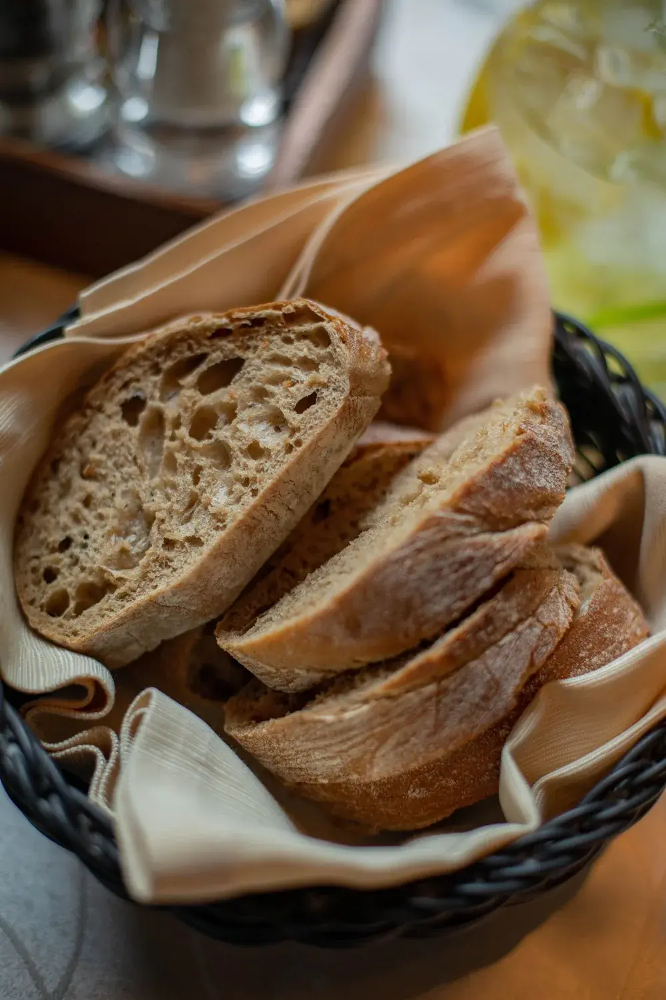
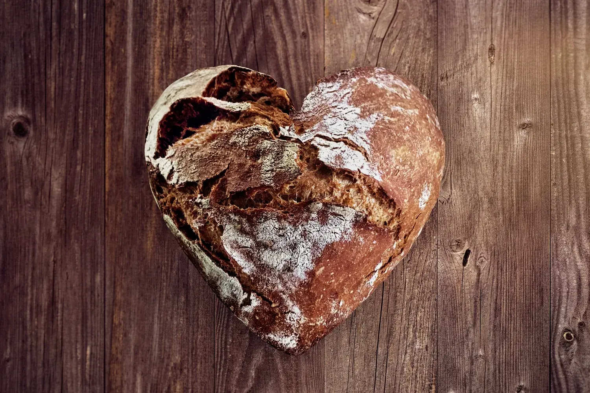
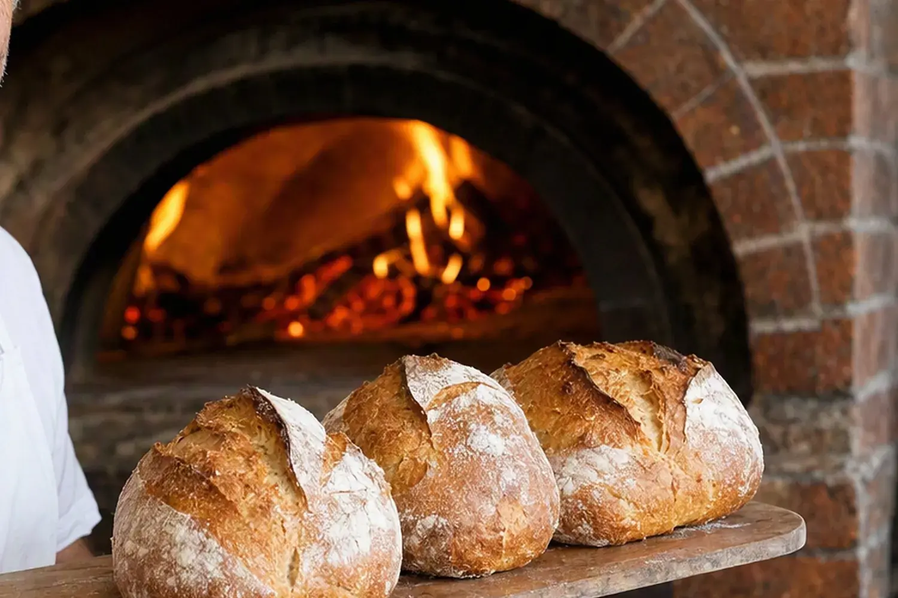

A KIS PÉKSÉG A SARKON · PÉCS
Legyen jó reggeled mindig!
A jó reggel, a jó kenyérnél kezdődik.

MARCI SÜT · LILI KÍNÁL
Friss kovászos kenyér, péksütemény és ráérős reggeli vár Pécs belvárosában. Nézz be hozzánk, vagy rendeld elő, amit biztosan haza szeretnél vinni.
NYITVA K–SZO 7–14MA A PULTBAN
Amit reggelente Marci kisüt és Lili kínál a pultnál
Kenyér a hétköznapokra, péksütemény a reggeli mellé, torta az ünnepre.


ELŐRENDELÉS
Válassz, írd meg, mit és mikorra szeretnél. Mi visszajelzünk.
Egész kenyeret és tortát legalább egy nappal korábban kérhetsz. Az átvétel és a fizetés a boltban történik. A rendelést a visszaigazolásunk után tekintsd elfogadottnak.
- 1Válassz
- 2Írd meg a részleteket
- 3Várd a visszajelzésünket

KÉT TESTVÉR · EGY KEMENCERÓLUNK
Marci a kemencénél. Lili a pultnál. Jó reggelt, Pécs!
A Hajnalban a nap nem a nyitással kezdődik. Marci már előbb megérkezik, hogy friss kenyér kerüljön a pultra. Lili a betérőket fogadja, és közben készül a kávé. Két testvér, egy kis belvárosi pékség, tizenkét hely egy nyugodt reggelihez.
Ismerd meg a kovász világátHAVONTA EGY SZOMBATON
Liszt a kézen. Kovász az asztalon.
Havonta egyszer kovászkészítő workshopot tartunk. Ha szívesen belekóstolnál a folyamatba, figyeld a következő alkalmat.
Érdeklődöm a workshopról
TALÁLKOZUNK REGGEL
Egy hely, ahová jó reggel érkezni.
Pécs belvárosában, egy csendes utcasarkon várunk. Ugorj be egy kenyérért, vagy ülj le egy kávé mellé péksütizni.
Hajnalzug utca 2.
A Kovász köz sarkán, Pécs
NYITVATARTÁS
Kedd–Szombat7:00–14:00
Vasárnap–HétfőZárva